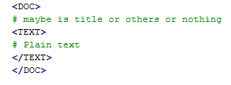

Introduction¶
A very short introduction into topic models and how to solve them using topicmodel-lib. This document also introduces some basic concepts and conventions.
Topic models¶
Topic models are probabilistic models of document collections that use latent variables to encode recurring patterns of word use (Blei, 2012). Topic modeling algorithms are inference algorithms; they uncover a set of patterns that pervade a collection and represent each document according to how it exhibits them. These patterns tend to be thematically coherent, which is why the models are called “topic models.” Topic models are used for both descriptive tasks, such as to build thematic navigators of large collections of documents, and for predictive tasks, such as to aid document classification. Topic models have been extended and applied in many domains
Latent Dirichlet Allocation (LDA) is the simplest topic model, LDA is a generative probabilistic model for collections of discrete data such as text corpora.
Large-scale learning¶
Modern data analysis requires computation with massive data. These problems illustrate some of the challenges to modern data analysis. Our data are complex and high-dimensional; we have assumptions to make from science, intuition, or other data analyses that involve structures we believe exist in the data but that we cannot directly observe; and finally, our data sets are large, possibly even arriving in a never-ending stream. We deploy this library to computing with graphical models that are appropriate for massive datasets, data that might not fit in memory or even be stored locally. This is an efficient tool for learning LDA at large scales
Learning methods for LDA¶
To learn LDA at large-scale, a good and efficient approach is stochastic learning (online/streaming methods). The learning process includes 2 main steps:
- Inference for individual document: infer to find out the hidden local variables: topic proportion \(\theta\) or topic indices z. To deal with this, we can estimate directly or estimate their distribution P(\(\theta\) | \(\gamma\)), P(z | \(\phi\)) (\(\gamma\), \(phi\) called “variational parameters”).
- Update global variable in a stochastic way to find out directly topics \(\beta\) or we can estimate topics by finding out its distribution P(\(\beta\) | \(\lambda\)) (estimating variational parameter \(\lambda\)). Global variable here maybe \(\beta\) or \(\lambda\) depend on each stochastic methods.
Indeed, this phase is as same as training step in machine learning.
Corpus¶
A corpus is a collection of digital documents. This collection is the input to topicmodel-lib from which it will infer the structure of the documents, their topics, topic proportions, etc. The latent structure inferred from the corpus can later be used to assign topics to new documents which were not present in the training corpus. For this reason, we also refer to this collection as the training corpus. No human intervention (such as tagging the documents by hand) is required - the topic classification is unsupervised.
Data Format¶
Because we need to learn the model from the massive data, the loading whole of training data into memory is a bad idea. Corpus used for training should be stored in a file and with a specific format. Our library supports 3 formats of data:
Raw Text¶
raw_corpus = ["Human machine interface for lab abc computer applications",
"A survey of user opinion of computer system response time",
"The EPS user interface management system",
"System and human system engineering testing of EPS",
"Relation of user perceived response time to error measurement",
"The generation of random binary unordered trees",
"The intersection graph of paths in trees",
"Graph minors IV Widths of trees and well quasi ordering",
"Graph minors A survey"]
The raw corpus must be stored in a file. Each document is placed in 2 pair tag <DOC></DOC> and <TEXT></TEXT> as follow
You can see raw AP corpus for example
Term-frequency (tf)¶
Term-frequency format (tf) is derived from Blei, 2003. This is a corpus which we achieve after preprocessing raw corpus. We also extract to a vocabulary set for that corpus (unique terms in whole corpus)
Under LDA, the words of each document are assumed exchangeable. Thus, each document is succinctly represented as a sparse vector of word counts. The data is a file where each line is of the form:
[N] [term_1]:[count] [term_2]:[count] … [term_N]:[count]
where [N] is the number of unique terms in the document, and the [count] associated with each term is how many times that term appeared in the document. Note that [term_i] is an integer which indexes the term (index of that term in file vocabulary); it is not a string.
For example, with corpus as raw_corpus above and file vocabulary is:
0. "human"
1. "machine"
2. "interface"
3. "lab"
4. "abc"
5. "computer"
6. "applications"
7. "survey"
8. "user"
9. "opinion"
10. "system"
11. "response"
12. "time"
13. "eps"
14. "management"
15. "engineering"
16. "testing"
17. "relation"
18. "perceived"
19. "error"
20. "measurement"
21. "generation"
22. "random"
23. "binary"
24. "unordered"
25. "trees"
26. "intersection"
27. "graph"
28. "paths"
29. "minors"
30. "widths"
31. "quasi"
32. "ordering"
The tf format of corpus will be:
7 0:1 1:1 2:1 3:1 4:1 5:1 6:1
7 7:1 8:1 9:1 5:1 10:1 11:1 12:1
5 13:1 8:1 2:1 14:1 10:1
5 10:2 0:1 15:1 16:1 13:1
7 17:1 8:1 18:1 11:1 12:1 19:1 20:1
5 21:1 22:1 23:1 24:1 25:1
4 26:1 27:1 28:1 25:1
6 27:1 29:1 30:1 25:1 31:1 32:1
3 27:1 29:1 7:1
Term-sequence (sq)¶
Each document is represented by a sequence of token as follow
[token_1] [token_2] [token_3]….
[token_i] also is index of that token in vocabulary file, not a string. (maybe exist that [token_i] = [token_j]) The sq format of the corpus above will be:
0 1 2 3 4 5 6
7 8 9 5 10 11 12
13 8 2 14 10
10 0 10 15 16 13
17 8 18 11 12 19 20
21 22 23 24 25
26 27 28 25
27 29 30 25 31 32
27 29 7
Guide to learn model¶
In this phase, the main task is to find out the global variable (topics) - in this project, we call it named model for simple. We designed the state-of-the-art methods (online/streaming learning): Online VB, Online CVB0, Online CGS, Online OPE, Online FW, Streaming VB, Streaming OPE, Streaming FW, ML-OPE, ML-CGS, ML-FW
All of this methods are used in the same way. So, in this guide, we’ll demo with a specific method such as Online VB. This method is proposed by Hoffman-2010, using stochastic variational inference
Data Preparation¶
Make sure that your training data must be stored in a text file and abide by the Data Format: tf, sq or raw text
We also support the preprocessing module to work with the raw text format, you can convert to the tf or sq format. But if you don’t want to use it, it’s OK because we integrated that work in class DataSet. Therefore, the first thing you need to do is create an object DataSet
from tmlib.datasets import DataSet
# data_path is the path of file contains your training data
data = DataSet(data_path, batch_size=5000, passes=5, shuffle_every=2)
The statement above is used when data_path is the raw text format. If your training file is the tf or sq format. You need to add an argument is the vocabulary file of the corpus as follow:
# vocab_file is the path of file vocabulary of corpus
data = DataSet(data_path, batch_size=5000, passes=5, shuffle_every=2, vocab_file=vocab_file)
The parameters batch_size, passes, shuffle_every you can see in documentation here
Learning¶
First, we need to create an object OnlineVB:
from tmlib.lda import OnlineVB
onl_vb = OnlineVB(data=data, num_topics=100, alpha=0.01, eta=0.01, tau0=1.0, kappa=0.9)
data is the object which created above. Parameter num_topics number of requested latent topics to be extracted from the training corpus. alpha, eta are hyperparameters of LDA model that affect sparsity of the topic proportions (\(\theta\)) and topic-word (\(\beta\)) distributions. tau0, kappa are learning parameters which are used in the update global variable step (same meaning as learning rate in the gradient descent optimization)
Start learning by call function learn_model:
model = onl_vb.learn_model()
The returned result is an object LdaModel
You can also save the model (\(\beta\) or \(\lambda\)) or some statistics such as: learning time, sparsity of document in the learning process
model = onl_vb.learn_model(save_statistic=True, save_model_every=2, compute_sparsity_every=2, save_top_words_every=2, num_top_words=10, model_folder='models')
The result is saved in folder models. More detail about this parameters, read here
One more thing, the topic proportions (\(\theta\)) of each document in the corpus can be saved in a file .h5. This work is necessary for visualization module but it’ll make the learning time slower. So, be careful when using it!
# for example: path_of_h5_file = 'models/database.h5'
model = onl_vb.learn_model(save_topic_proportion=path_of_h5_file)
Saving model, display topics¶
After the learning phase as above, you can save the topic distribution (model - \(\beta\) or \(\lambda\))
# path_to_save is the path of file to save model
model.save_model(path_to_save, file_type='binary')
File path_to_save is the .npy file if type of file is binary or is the .txt file if file_type is 'txt'
You also can display the topics discovered
# display topics, print the top 10 words of each topic to screen
model.print_top_words(10, data.vocab_file, display_result='screen')
If you want to save in a file:
# path_file is to which data is saved
model.print_top_words(10, data.vocab_file, display_result=path_file)
Inference for new documents¶
After learning phase, you have the model - topic distributions (\(\beta\) or \(\lambda\)). You want to infer for some documents to find out what topics these documents are related to. We need to estimate topic-proportions \(\theta\)
First, create an object DataSet to load new documents from a file.
If data format in that file is Raw Text, you need the vocabulary file used in learning phase
from tmlib.datasets import DataSet
data = DataSet()
# vocab_file is the vocabulary file used in learning phase
new_corpus = data.load_new_documents(file_new_docs, vocab_file=vocab_file)
or if data format is the tf or sq format. The statement simply is:
new_corpus = data.load_new_documents(file_new_docs)
After that, you have to load the model which is saved in the learning phase into object OnlineVB
# create object LdaModel
learnt_model = LdaModel()
# read topic distribution from file
lda_model.load_model(path_file_to_read)
# load lda_model into OnlineVB
from tmlib.lda import OnlineVB
online_vb = OnlineVB(lda_model=learnt_model)
Call infer_new_docs function to rum inference
gamma = online_vb.infer_new_docs(new_corpus)
# you can estimate topic proportion theta from variational parameter gamma
theta = online_vb.estimate_topic_proportion(gamma)
Example¶
You can see in example folder. We prepared the AP corpus including both raw corpus and term-frequency corpus. In here, we’ll show code with both of type corpus and use method Online OPE (known is fast than Online VB)
Raw AP corpus
from tmlib.lda import OnlineOPE from tmlib.datasets import DataSet # data preparation data = DataSet(data_path='data/ap_train_raw.txt', batch_size=100, passes=5, shuffle_every=2) # learning onl_ope = OnlineOPE(data=data, num_topics=20, alpha=0.2) model = onl_vb.learn_model() # save model (beta or lambda) model.save_model('topic_distribution.npy') # display top 10 words of each topic model.print_top_words(10, data.vocab_file, display_result='screen') # inference for new documents vocab_file = data.vocab_file new_corpus = data.load_new_documents('data/ap_infer_raw.txt', vocab_file=vocab_file) topic_proportions = onl_ope.infer_new_docs(new_corpus)
Topics:
topic 0: water, environmental, people, trust, earth, pollution, taxes, claims, air, boat, topic 1: year, people, years, mrs, police, time, day, family, state, women, topic 2: percent, year, company, department, million, plant, health, state, report, study, topic 3: police, government, people, military, iraq, army, killed, officials, israel, war, topic 4: cent, cents, weather, lower, temperatures, bushel, snow, inches, coast, central, topic 5: billion, deficit, housing, japan, japanese, trade, fair, cuba, imports, exports, topic 6: cbs, abc, williams, miles, area, earthquake, quake, homeless, pope, john, topic 7: bush, president, dukakis, states, reagan, congress, campaign, house, united, south, topic 8: campaign, state, northern, mexico, republican, police, county, alabama, cuomo, governor, topic 9: trade, takeshita, deconcini, oil, pension, committee, keating, fernandez, lawsuit, illness, topic 10: court, case, attorney, trial, judge, federal, charges, law, justice, jury, topic 11: party, government, political, workers, national, labor, opposition, people, elections, country, topic 12: million, tax, sales, income, year, cash, estate, assets, money, billion, topic 13: school, movie, film, board, parents, ban, mca, theater, roberts, fees, topic 14: students, computer, farmers, teachers, smoking, schools, student, stolen, kasparov, faculty, topic 15: dollar, yen, late, gold, london, bid, ounce, bank, thursday, dealers, topic 16: percent, market, year, stock, million, prices, billion, rose, exchange, index, topic 17: soviet, gorbachev, united, union, president, officials, west, year, germany, east, topic 18: bill, senate, house, kennedy, sen, rep, measure, humphrey, director, thompson, topic 19: meese, museum, disney, school, city, board, art, smith, buildings, memorial,
tf format
from tmlib.lda import OnlineOPE from tmlib.datasets import DataSet # data preparation data = DataSet(data_path='data/ap_train.txt', batch_size=100, passes=5, shuffle_every=2, vocab_file='data/vocab.txt') # learning onl_ope = OnlineOPE(data=data, num_topics=20, alpha=0.2) model = onl_vb.learn_model() # save model (beta or lambda) model.save_model('topic_distribution.npy') # display top 10 words of each topic model.print_top_words(10, data.vocab_file, display_result='screen') # inference for new documents new_corpus = data.load_new_documents('data/ap_infer.txt') topic_proportions = onl_ope.infer_new_docs(new_corpus)
Topics:
topic 0: two, new, people, i, years, first, officials, time, fire, day, topic 1: israel, minister, prime, vietnam, thatcher, party, opec, ministers, demjanjuk, labor, topic 2: million, percent, futures, year, market, bank, analysts, new, cbs, nbc, topic 3: dukakis, jackson, democratic, presidential, campaign, candidates, candidate, vote, voters, delegates, topic 4: million, company, new, billion, inc, corp, board, year, court, federal, topic 5: bush, united, states, president, trade, billion, house, congress, new, budget, topic 6: stock, market, dollar, trading, exchange, yen, prices, late, index, rose, topic 7: korean, korea, city, village, police, north, st, traffic, koreas, citys, topic 8: police, people, killed, two, government, army, military, officials, three, city, topic 9: south, africa, african, black, elections, party, national, war, mandela, blacks, topic 10: states, united, nicaragua, noriega, drug, contras, court, coup, humphrey, manila, topic 11: reagan, china, nuclear, study, b, prisoners, fitzwater, researchers, games, animals, topic 12: i, new, people, years, percent, year, last, state, time, two, topic 13: trial, case, prison, charges, convicted, jury, attorney, guilty, sentence, prosecutors, topic 14: rain, northern, texas, inches, california, central, damage, santa, hospital, valley, topic 15: soviet, government, gorbachev, union, party, president, political, two, news, people, topic 16: service, offer, court, companies, firm, ruling, information, appeals, operations, services, topic 17: water, care, homeless, environmental, pollution, fair, species, air, disaster, farm, topic 18: percent, year, cents, oil, prices, west, german, rate, sales, price, topic 19: air, plane, flight, two, iraq, soviet, force, kuwait, airport, iraqi,